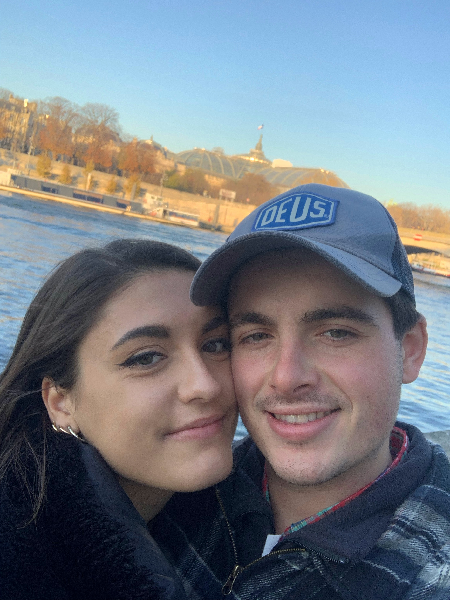
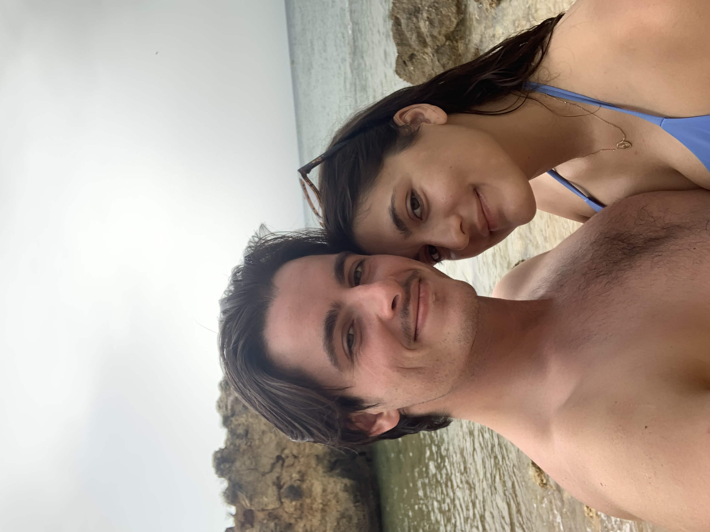
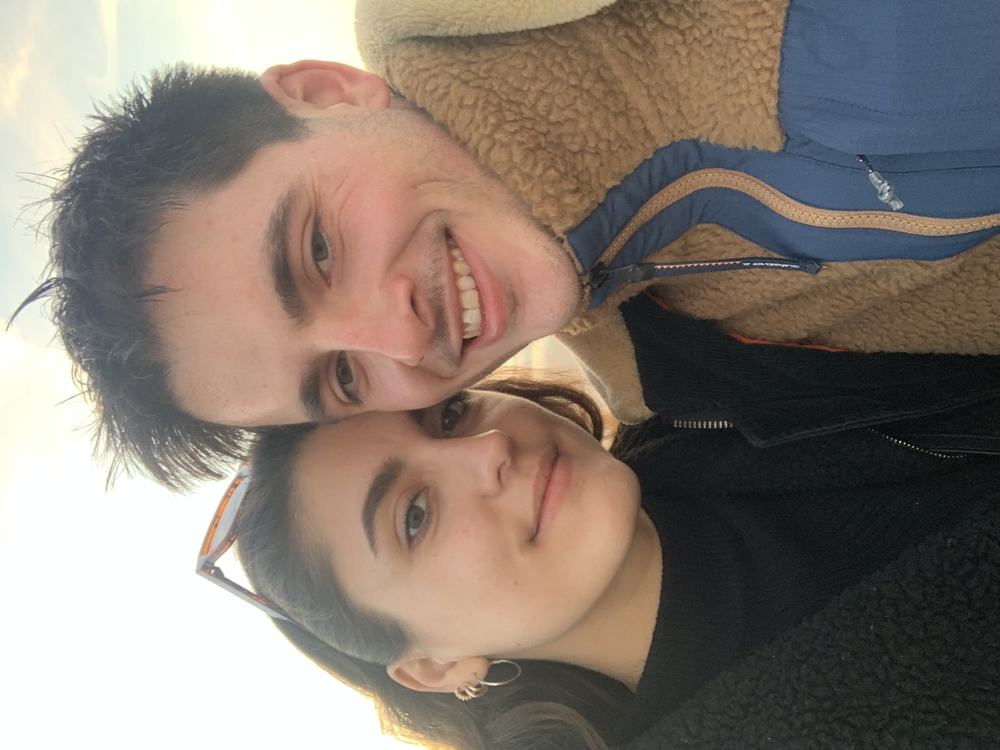
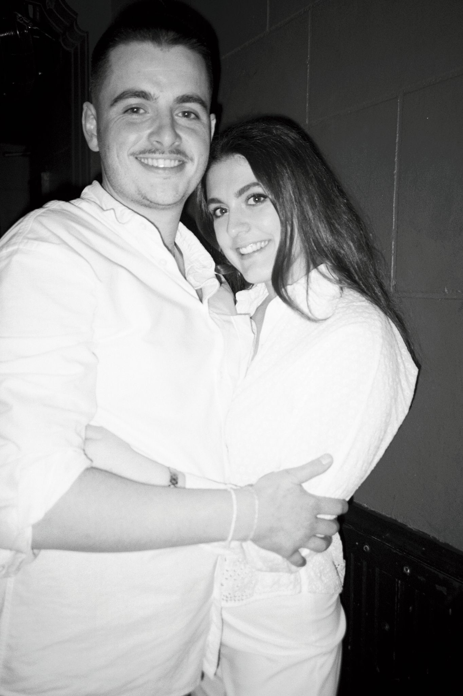
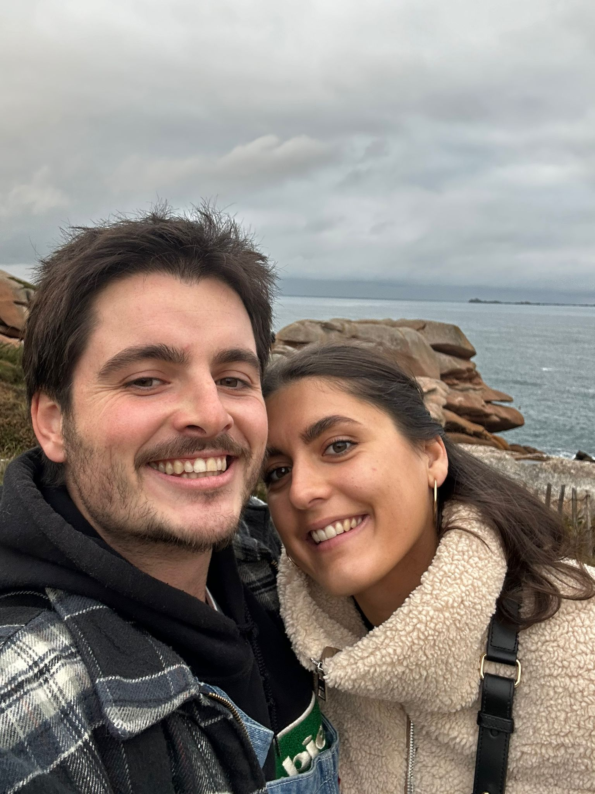
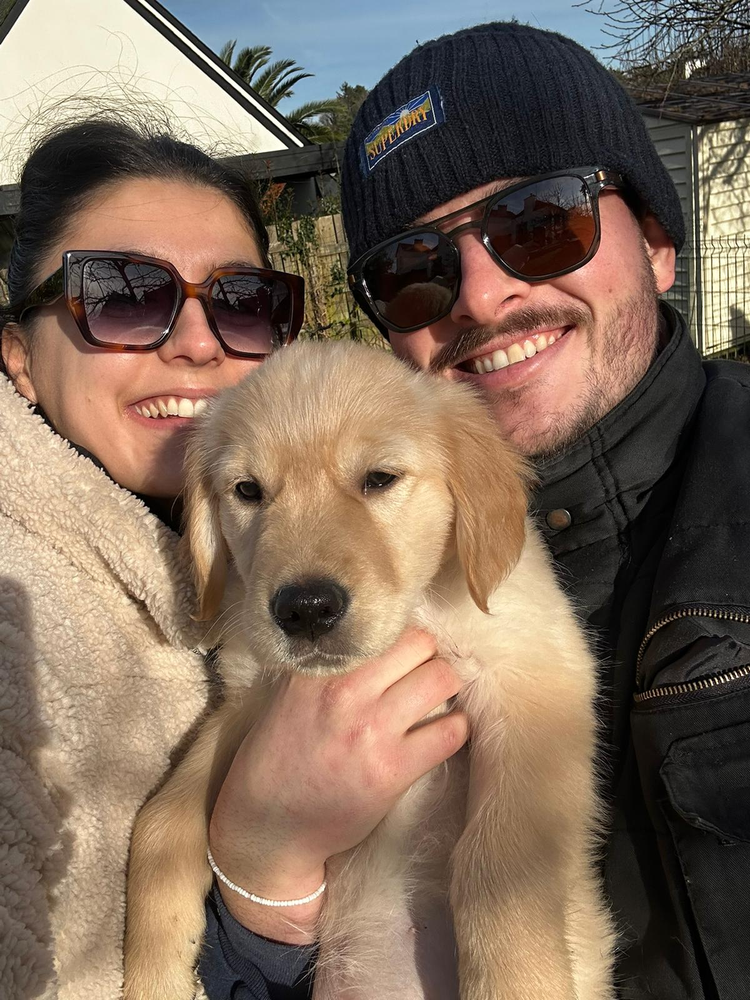
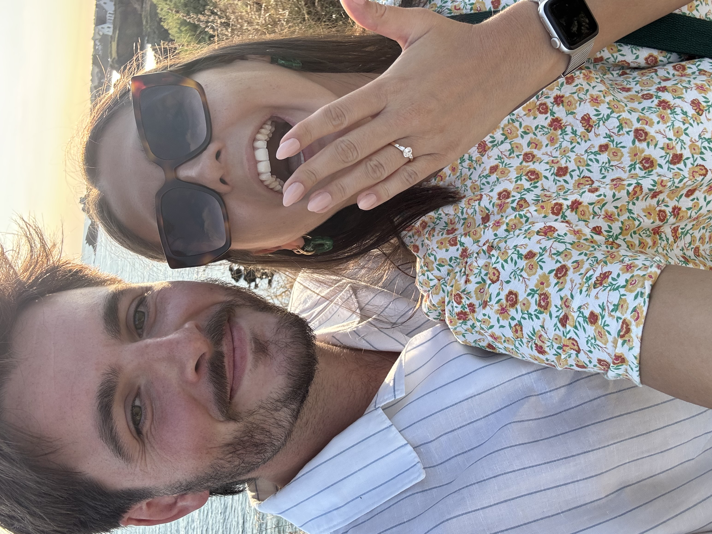

Notre Histoire
Première rencontre
Nous nous sommes rencontrés… à la cantine de l’école de commerce ! Pas très glamour, me direz-vous, mais qui aurait cru que toute une pause déjeuner pourrait changer nos vies ?
Nous ne nous connaissions pas encore, mais nous avons passé ce moment ensemble comme si nous étions les seuls au monde.
Puis, nous sommes devenus proches… jusqu’à une petite pause dans notre histoire : Bastien n’était pas encore prêt à réaliser toute la valeur d’Alice (oui, c’est bien moi qui écris…).
Le retour de Bastien dans la vie d'Alice
Un jour d’août 2021, Alice a reçu un message inattendu… de Bastien ! Après tout ce temps, il assurait avoir changé. Curieuse, elle lui a laissé une chance de lui prouver que c’était vrai.
Les mois suivants furent remplis de rires, de surprises, de petits moments qui scellaient leur complicité et surtout d'amour.
Et voilà… aujourd’hui, vous êtes conviés à célébrer leur amour et assister à ce mariage tant attendu !
Premier voyage
Nous avons pris la direction du Portugal, explorant Lisbonne et l’Algarve. Entre plages idylliques, ruelles charmantes… et cocktails (oui, il y en a eu beaucoup), ce voyage fut un véritable enchantement.
Un souvenir que nous chérissons encore aujourd’hui, avec le sourire à chaque pensée.
Emménagement
En septembre 2022, Alice emménageait avec Bastien... et ses copains (je vous adore les gars), pour commencer son nouveau travail à Paris !
Ils ont ensuite trouvé leur appartement à Boulogne-Billancourt, où ils ont adopté leur petit chat : Timon.
Pacs
Nous nous sommes pacsés en 2023 !! Une étape officielle pour sceller notre amour, et surtout une excuse pour faire la fête avec nos amis.
Déménagement en Bretagne
Grande étape : en septembre 2024, nous avons quitté Paris pour une vie douce et calme en Bretagne, avec notre maison, 6 poules, notre chat et un potager ! Le paradis pour nous.
S’éloigner de nos amis et de nos familles, et vivre presque en autarcie juste tous les deux, nous a prouvé que notre couple était prêt pour le mariage…
Adoption de Voltaire
En janvier 2025, notre famille s’est agrandie avec l’arrivée de Voltaire, notre adorable Golden Retriever.
Gentil, loyal… et (objectivement) le plus beau chien du monde ! Notre famille compte désormais quatre membres… sans oublier nos six poules.
Demande en mariage
Le 2 août 2025, Bastien a demandé Alice en mariage, sur les falaises de Guidel. Un instant magique et émouvant.
Plot twist : Alice ne se doutait de rien des préparatifs, jusqu’au matin même ! Ça n’a pas empêché de vivre un merveilleux moment en pique-niquant sur la plage et en partageant notre bonheur avec nos proches.
Aujourd’hui
Vous êtes invités à notre mariage, pour commencer à écrire cette nouvelle page de vie, ensemble.